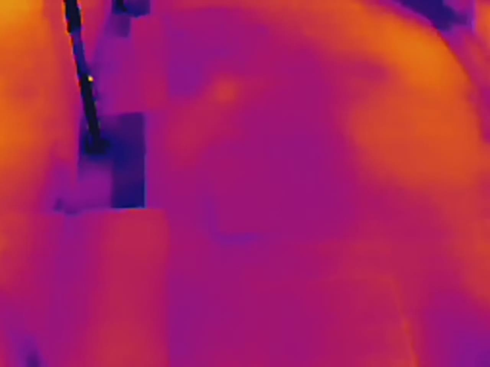

FRAME 000000:00:00.0
1280 x 960

Loading frame
Drop a video beside the label JSON
The frame metadata is loaded, but no playable source is attached.
NAVIGATE
Timeline
detectedreviewedflagged
CLIP-WIDE DETECTIONS
Heatmap
AGGREGATED TRACK
Select a clip
The overlay combines detections from the full active clip.
0 boxes
lowhigh
CROSS-FRAME LABELS
Labels
| Frame | Timecode | Label | Confidence | Review state | Box |
|---|
TENDER OUTPUT